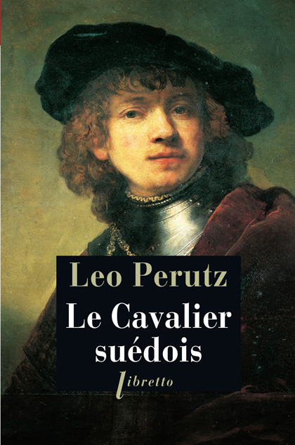

Aux alentours de l’an 2000, j’ai beaucoup joué à Cossacks, un jeu ukrainien de stratégie en temps réel dans lequel s’affrontent des nations européennes des XVIIe et XVIIIe siècles. La bande-son du jeu est inscrite au plus profond de mes connexions neuronales et c’est même le premier “test” de jeu vidéo que j’ai écrit pour un site web amateur (c’était une autre époque). J’avais onze ans et une idée plus que vague du rôle joué par des pays tels que la Suède, la Russie ou les Saxons dans ces vastes boucheries.
Le cavalier suédois, un roman de l’écrivain Leo Perutz (né à Prague en 1882), se déroule en plein dans ce contexte, à savoir “la grande guerre du Nord” et plus précisément le conflit qui oppose la Suède du roi Charles XII et la Russie de Pierre le Grand au début du XVIIIe siècle. Une sorte de roman d’aventures historique donc, mais pas seulement. L’auteur argentin Jorge Luis Borges, grand maître du fantastique et de l’étrange, avait une très bonne opinion de son collègue austro-hongrois, ce qui est plutôt bon signe et donne quelques indications. Je n’ai ainsi pas été surpris d’avoir affaire à un roman étrange se baladant dans les franges du fantastique.
C’est mon premier livre de cet auteur et l’occasion de constater une de ses marottes : nous résumer toute l’intrigue dans le prologue. Ici, on y apprend que ce fameux cavalier suédois, parti servir son roi à la guerre, y est mort après s’être vaillamment illustré, laissant au domaine sa femme et sa fille (sauf que cette dernière a de bonnes raisons de ne pas croire à ce décès). Ensuite, seulement, l’histoire nous est dévoilée en détail. C’est comme cela que nous découvrons les péripéties d’un noble suédois et d’un voleur, l’un comme l’autre en cavale, dont les destins vont singulièrement s’entremêler.
L’intrigue est généralement ancrée dans la réalité, racontant grosso modo une tentative de vol d’identité, mais le récit d’aventures soudain flanche et floute les contours du décor. On doute, on hésite quant à la signification de ce qui nous est décrit, et ça marche très bien. Je m’étonne de n’avoir jamais entendu parler de Leo Perutz avant cette année et je suis bien content d’avoir tout un nouvel univers à explorer. Au passage, j’en ai profité pour relancer une petite partie de Cossacks et retrouver brièvement mes onze ans.
Titre original : Der Schwedische Reiter / Sortie originale (allemand) : 1936 / Version française : 1982 (traduction : Frédérique Daber)